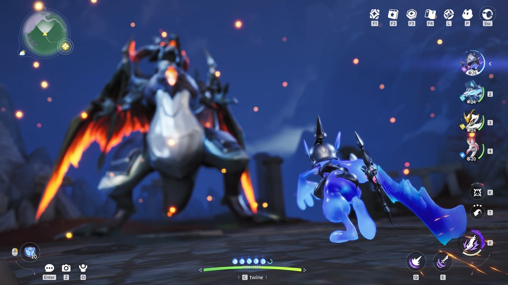
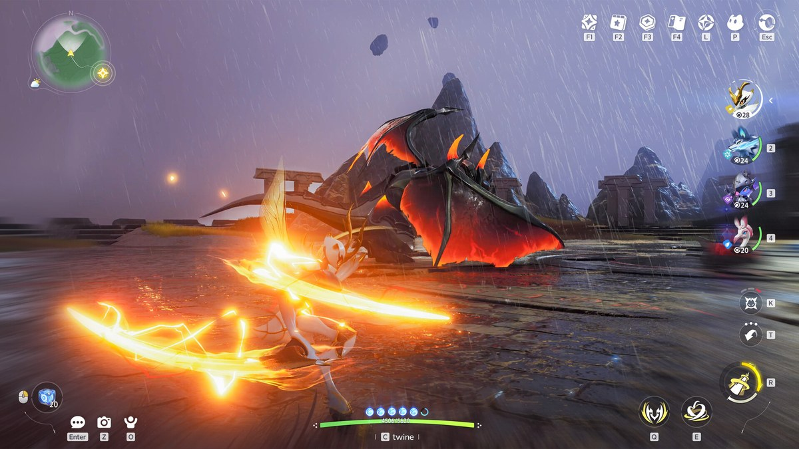
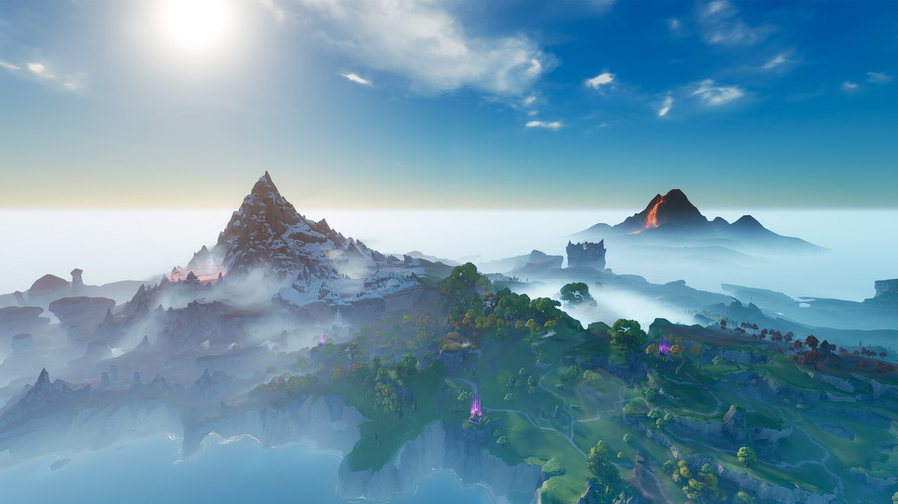

애니모 진화 조건 총정리, 분기 진화 16계열 갈리는 법과 진화석 얻는 법
애니모 도감을 채우다 보면 다들 한 번씩 부딪히는 게 분기 진화인데요, 저도 화르랑 키우다가 '이글랑이랑 헬울프 둘 다 갖고 싶은데' 싶어 한참 헤맸거든요. 그래서 계열마다 흩어진 분기 진화 조건을 한 판에 모아봤어요.
이번 글은 앞으로 쓸 애니모 진화 글들의 지도예요. 어떤 계열이 어떻게 갈리는지, 진화석은 어디서 구하는지 모아두고, 계열별 심화는 따로 풀어볼게요.
애니모 진화 조건이 대체 뭐길래 이렇게 헷갈릴까요?
애니모 진화 조건은 크게 7가지 유형으로 나눠볼 수 있습니다. Game8이 정리해둔 분류틀인데요🔍 Game8 분류(비공식), 비공식이어도 조건 문구는 위키·팬 도감·커뮤니티 교차 확인값이에요.
- 레벨만 — 지정 레벨만 채우면 조건 끝
- 레벨+진화석 — 레벨 채운 뒤 진화석 1개(또는 조합)를 소모
- 여정·지하 궁전 클리어 — 스토리 퀘스트·던전 클리어
- 패시브 어빌리티 습득 — 특정 패시브를 미리 배워둬야 함
- 시간대 — 낮·밤처럼 정해진 시간에 특정 행동을 해야 함
- 엘리트·보스 처치 — 같은 계열 엘리트·보스급을 직접 잡아야 함
- 종 고유의 장소·행동 — 특정 지형·자세·파티 구성 같은 그 종만의 조건
분기 진화, 두 갈래를 한 마리로 다 가질 수 있을까요?
아니요, 못 가져요 — 두 진화체는 순서가 아니라 '평행'이라, 한쪽으로 진화시키면 다른 쪽은 영영 못 얻어요. 화르랑이 이글랑·헬울프로 갈리는 게 대표적인데, 이글랑 다음이 헬울프가 아니라 화르랑에서 곧장 두 갈래로 갈려요.
둘 다 갖고 싶으면 진화 전 개체를 2마리 준비해 각각 다른 쪽으로 진화시키는 수밖에 없어요. 미리 정해두고, 욕심나면 한 마리 더 챙겨두세요. 이 평행 구조는 해외 공략 사이트 여러 곳이 공통으로 적어 믿을 만해요.
16계열 분기 진화 조건, 한 판에 정리해봤어요
정리한 표는 공식 위키 진화 루트에 팬 도감 모아니모·해외 확인처를 교차해 채운 조건이에요(9/20 기준·공식 위키는 조건 미기재라 전부 팬 도감·커뮤니티 값). 표의 🔵는 해외 사이트·커뮤니티 여러 곳이 같은 내용을 말하는 항목이고요, ✅는 공식·인게임에서 직접 확인한 항목이에요. 표시가 따로 없는 나머지는 한 곳에서만 확인된 값이라고 보시면 돼요.
| 계열 | 진화체 | 레벨 | 추가 조건 | 소모 아이템 |
|---|---|---|---|---|
| 화르랑 | 이글랑 | 20 | 이글랑 엘리트 처치 | 화염석×1 |
| 헬울프 | 20 | 여정 〈투사〉 완료 ✅ | 늑대의 영혼×6+어둠석×1 | |
| 호루매기 | 롬본이 | 18 | HP 후천 어빌리티 6P+, 패시브[신비한 나팔] 습득 | 질풍석×1 |
| 럼펫이 | 18 | - | 질풍석×1 | |
| 튜바얌 | 18 | 튜바얌 엘리트 처치, 무력화 후천 어빌리티 6P+ | 질풍석×1 | |
| 장꾸모리 | 아이시우스 | 20 | - | 물결석×1 |
| 연잎룡 | 20 | 연잎룡 엘리트 처치, 서식 연잎 위 위치 | 녹초석×1 | |
| 뭉게양 | 몽실양 | 21 | 몽실양 엘리트 처치 | 질풍석×1 |
| 쿨쿨양 | 21 | 파티 포함, 밤~낮 함께 휴식, 패시브[안식의 선율] 🔵 | 어둠석×1 | |
| 삑삑초 | 위치햇그라스 | 12 | 지하 궁전 «비바람» 클리어 | - |
| 굴파미 | 18 | 굴파미 엘리트 처치, 지하궁전에서 1분 뿌리 내리기 | 녹초석×1 | |
| 싹크랩 | 풀크랩 | 21 | 풀크랩 엘리트 처치 | 빙결석×1 |
| 스탈크랩 | 21 | 스탈크랩 엘리트 처치, 성격[T] 보유 | 빙결석×1 | |
| 울먹팡 | 로즈펜서(위키 표기: 콕콕바라) | 27 | 울먹팡 1마리 파티로 로즈펜서 처치 | 녹초석×1 |
| 플로리안 | 27 | 여정 〈꽃과 가시〉 완료, 성격[F] 보유 | 녹초석×1+몽환 장미 꽃술×1 | |
| 라라에그 | 붐테일자드 | 25 | - | 녹초석×1 |
| 썬더자드 | 25 | [애니모 발견왕] 이벤트 퀘스트 완료 ✅ | 번개석×1 | |
| 싹뚜기 | 서걱리퍼 | 29 | 동일 형태 싹뚜기 3마리 연속 처치 | 어둠석×1 |
| 볼트맨티스(위키 표기: 썬더스퀵) | 29 | 스팅 소울 아이템 보유 🔵 | 번개석×1 | |
| 보글달 | 둔둔달 | 39 | 둔둔달 엘리트 처치 | 물결석×1 |
| 둥실달 | 39 | 이성 수줍달에게 다가가 따라오게 유도 | 물결석×1 | |
| 데굴굴 | 모터터 | 39 | 데구르르 레이스 챌린지 클리어 | 대지석×1 |
| 록볼볼 | 39 | 록볼볼 엘리트 처치, 패시브[기묘한 암석] | 대지석×1 | |
| 투구누니 | 누니용사 | 45 | "용기의 검을 뽑아야 합니다." 🔵 | 어둠석×1 |
| 아머누니 | 45 | 전방위 방어 중 반격으로 처치, 패시브[부동의 성벽] | 어둠석×1 | |
| 갸면뇽 | 갸고일 | 48 | 월드 보물 상자 누적 30개 오픈 | 질풍석×1 |
| 갸갑파이어 | 48 | 갸갑파이어 보스 처치, 어빌리티 평가 샤이닝 스타 | 화염석×1 | |
| 록키 | 라바크 | 38 | - | - |
| 크리스톤 | 38 | - | - |
록키 계열은 38레벨만 채우면 라바크나 크리스톤으로 갈라지고 다른 조건은 없어요. 다음 단계에서 라바크는 마그라곤(엘리트 처치+온천욕, 화염석×1), 크리스톤은 크리스바인(엘리트 처치, 대지석×1)으로 한 번 더 진화하는 2단 구조예요.
참고로 풀크랩은 땅/풀 속성인데 표엔 빙결석이 필요하다고 나와요. 해외 사이트에는 같은 자리가 대지석으로 적혀 있고 빙결석은 얼음 속성인 스탈크랩 쪽이라, 팬 도감이 두 줄을 같은 돌로 잘못 옮겼을 가능성이 커요 — 빙결석부터 모으지 마시고 진화창에서 한 번 더 확인해보세요.
표엔 14계열만 나오는데 사실 분기 계열은 16개예요. 래빗배트·라이트밍 계열이 하나씩 더 있는데, 각각 분기 하나는 위키에 한국어 이름 없이 중국어 원문만 남아 표에서 뺐어요. 다만 래빗배트 쪽 디텍배트는 애니모 25레벨을 채우고 공격 후천 어빌리티를 6포인트 이상 올리면 되고, 라이트밍 쪽 볼트밍도 이름·조건이 모두 확인됐으니 나머지 한쪽씩만 아직인 셈이에요. 디텍배트는 소모 아이템이 팬 도감엔 안 적혀 있는데, 해외 사이트에는 질풍석×1이 든다고 나와 있어요.
엘리트·보스를 잡아야 갈라지는 조건
가장 흔한 조건이에요. 같은 계열 '엘리트'나 '보스'급 개체를 직접 잡아야 진화가 열리는데, 정확한 대상·레벨은 위 표에서 확인하세요.

이미지: 애니모 스팀 스토어 페이지
밤 유적 같은 데서 이런 보스급이랑 마주치면 반갑다기보단 좀 쫄리는데, 진화 조건 채우려고 일부러 찾아다녀야 하는 계열도 꽤 있던데요.
시간대가 걸리는 조건도 있어요
시간대까지 걸리는 조건은 흔치 않은데, 쿨쿨양이 대표적이에요. 파티와 밤부터 낮까지 휴식해야 하는데, 같은 뭉게양의 몽실양은 엘리트만 잡으면 되니 조건이 꽤 달라요.

이미지: 애니모 스팀 스토어 페이지
비 오는 날 유적 분위기가 이런 느낌인데, 시간대 조건 채우려고 기다려본 분들은 이 그림이 무슨 뜻인지 아실 거예요.
종마다 정해진 장소에서만 되는 조건
장소가 정해진 계열도 있어요. 연잎룡은 연잎룡 엘리트가 서식하는 거대한 연잎 위에 있어야 하고, 볼트밍은 라이트밍 33레벨에 볼트밍 엘리트를 처치하고 뇌전의 숲 뇌전 나무 아래에 서 있어야 하는데, 번개석×1까지 들어요.

이미지: 애니모 스팀 스토어 페이지
애니모 지역이 이렇게 원소별로 지형이 확 갈리다 보니, 계열마다 '되는 자리'가 다른 게 이해는 가더라고요.
진화에는 아이템도 든다는 거, 알고 계셨나요?
애니모 진화는 대부분 레벨만으로 끝나지 않고 진화석 같은 소모 아이템이 함께 들어요. 9월 18일 패치노트가 '[펀치테일]의 진화에 소모되는 아이템 종류를 조정'했다고 밝혔으니 확실한 사실입니다.✅ 공식(9/18 패치노트) 대부분 진화석 1개, 몇몇은 특수 재료까지 필요해요.
진화석 10종, 이렇게 정리돼 있어요
정리해보니 진화석 이름은 이렇게 10종이에요.
- 화염석 · 물결석 · 질풍석 · 빙결석 · 번개석
- 대지석 · 녹초석 · 어둠석 · 광휘석 · 기원석
이 이름은 팬 도감 표기라 인게임 명칭과 다를 수 있어요.🔍 팬 도감 표기 구하는 곳은 확실해요 — 「엘리트 도전(진화재료)」에서 같은 원소 엘리트를 처치하면 돼요. 다만 광휘석·기원석은 조건표 53건 어디에도 안 나와요 — 나머지 8종만 등장해요.
이색 조건 8개, 이건 좀 웃긴데요
'이게 진화 조건이라고?' 싶을 만큼 특이한 것들도 있어요.
- 쿨쿨양 — 파티에 넣고 밤부터 낮까지 같이 잠만 자면 돼요
- 마그라곤 — 온천탕에 들어가서 온천욕을 즐겨야 해요
- 둥실달 — 이성 수줍달한테 다가가서 따라오게 유도해야 해요
- 굴파미 — 지하 궁전에서 1분 동안 뿌리 내리기(삑삑초 탐사 스킬 [뿌리 내리기])
- 갸고일 — 월드 돌아다니며 보물 상자를 누적 30개 열어야 해요
- 갸갑파이어 — 어빌리티 평가가 '샤이닝 스타'까지 올라가야 해요
- 로즈펜서 — 울먹팡 한 마리만 편성한 파티로 처치해야 해요
- 우스멍 — 다른 유저랑 애니모를 1번 교환해야 해요
온천욕이나 같이 잠자기 같은 조건은 처음엔 웃겼는데, 막상 하려니 손이 많이 가겠더라고요 ㅎㅎ.
앞으로 계열별로 하나씩 더 풀어드릴게요
화르랑→헬울프 갈라지는 조건은 이미 따로 자세히 다뤄뒀어요. 나머지 계열도 파밍처·좌표까지 하나씩 이어서 풀어드릴게요.
확정된 건 16계열 분기 구조·평행 분기 규칙·진화에 아이템이 든다는 사실이고, 아직 확인이 덜 된 건 진화석의 인게임 표기·미공개 분기 2종의 한국어 이름·조건 유형 7분류의 공식 여부예요.
자주 묻는 질문
Q. 한국어 이름이 아직 없는 분기 계열은 언제 풀리나요?
래빗배트·라이트밍 계열의 분기 하나씩은 아직 위키에 중국어 이름만 있어서, 정확히 언제 한국어 명칭이 붙을지는 확인이 안 돼요. 로컬라이즈가 더 진행되면 채워질 걸로 보여요.
Q. 지금 시작해도 웬만한 진화는 다 볼 수 있을까요?
네, 표에 정리한 레벨 기준이 12레벨부터 48레벨까지 넓게 퍼져 있어서 천천히 키워도 대부분 구경할 수 있어요. 다만 45레벨을 넘는 조건들은 시간이 좀 걸리니까 여유 있게 잡고 가시는 게 좋아요.
애니모 진화 조건 정리
같은 계열의 두 분기는 평행이라 하나를 고르면 다른 하나는 개체를 새로 준비해야 하고, 대부분 레벨+진화석에 엘리트 처치나 특정 행동이 붙는 구조입니다. 표 하나만 저장해두셔도 뭘 준비할지 한눈에 보여요. 천천히 채워가며 참고해보세요!
✔ 애니모 같이 보기 좋은 내용
· 애니모 전투 티어표 정리, 1티어 애니모 추천까지 짚어봤어요
· 애니모 캠핑카 생활 티어표 추천, 홈 능력 13종 정리
· 애니모 용어 총정리, 천휘 애니모 획득부터 희귀도 평가 차이부터 선천 후천 어빌리티, 옵시디언까지
참고한 곳
· 애니모 공식 위키
· 애니모 공식 홈페이지
· 애니모 스팀 공지·패치노트